ラベルフレームウィジェットはフレームウィジェットとラベルウィジェットを合わせたもので、Tcl/Tk 8.4 から追加された新しいウィジェットです。見た目は枠付きのフレームで、枠の上に見出しラベルが表示されます。
ラベルフレームウィジェットはコマンド labelframe で生成します。
labelframe ウィジェット名 オプション
主なオプションを示します。
見出しラベルに表示するテキストは -text で指定します。見出しラベルの位置は -labelanchor で指定します。デフォルトは nw (左上) です。形状は -relief で指定します。デフォルトは groove です。見出しラベルの部分はテキストだけではなく、-lablewidget でウィジェットを指定することができます。
それでは、簡単な使用例を示しましょう。次のリストを見てください。
リスト : ラベルフレーム (1)
foreach r {nw n ne sw s se} {
labelframe .$r -text label -width 80 -height 60 -labelanchor $r
pack .$r -padx 5 -pady 5 -side left
}
-lableanchor を nw, n, ne, sw, s, se に変えてラベルフレームを表示ます。pack のオプション -padx と -pady は、ウィジェットの周囲に設定する余白の長さを指定します。これが大きいとウィジェットの間隔が開くことになります。それでは実行結果を示します。
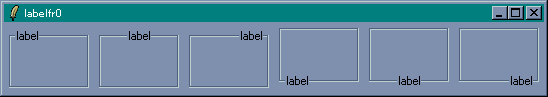 ラベルフレーム(1)見出しラベルの位置を変更しただけですが、見た目は随分とかわりますね。
次は -relief を変更してみましょう。5 つの形状をすべて表示します。
リスト : ラベルフレーム (2)
foreach r {raised sunken flat groove ridge} {
labelframe .$r -text $r -width 80 -height 60 -relief $r
pack .$r -padx 5 -pady 5 -side left
}
実行結果は次のようになります。
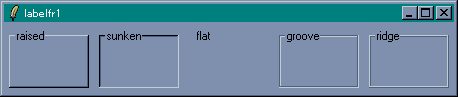 ラベルフレーム(2)枠の幅はフレームウィジェットと同様にオプション -borderwidth で変更することができます。たとえば -relief が raised の場合、枠の上辺と左辺を背景よりも明るい色で、枠の下辺と右辺を暗い色で描くことにより、フレームがウィンドウから出っ張っているように見えます。-borderwidth の値を増やすと、この幅が増えるのでフレームはより出っ張って見えるようになります。興味のある方は試してみてください。
今度はラベルフレームにラジオボタンとチェックボタンを配置してみましょう。次のリストを見てください。
リスト : ラベルフレーム (3) # ラジオボタン用変数 set v 0 labelframe .lf0 -text "Group1" radiobutton .b0 -text "radiobutton 0" -value 0 -variable v radiobutton .b1 -text "radiobutton 1" -value 1 -variable v radiobutton .b2 -text "radiobutton 2" -value 2 -variable v pack .b0 .b1 .b2 -in .lf0 labelframe .lf1 -text "Group2" checkbutton .cb0 -text "checkbutton 0" checkbutton .cb1 -text "checkbutton 1" checkbutton .cb2 -text "checkbutton 2" pack .cb0 .cb1 .cb2 -in .lf1 pack .lf0 .lf1 -padx 5 -pady 5 -side left
ラベルフレーム .lf0 にはラジオボタンを 3 個、.lf1 にはチェックボタンを 3 個配置します。ウィジェットの配置方法はフレームウィジェットと同じです。今回は pack の -in オプションを使って配置しています。これで、ラベルフレームにウィジェットを配置することができます。
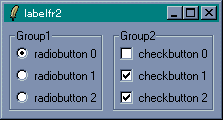 ラベルフレーム(3)最後に、-labelwidget オプションを使った例を示しましょう。見出しラベルの部分をチェックボタンにして、ラジオボタンの状態を制御することにします。ラジオボタンを使用するときはチェックボタンをオンにします。逆に、チェックボタンがオフのときはラジオボタンを使うことはできません。プログラムは次のようになります。
リスト : ラベルフレーム (4)
# ラジオボタンとチェックボタンで使用する変数
set flag 0
set v 0
# チェックボタン
checkbutton .cb -text "use button" -variable flag -command change_state
# ラベルフレーム
labelframe .lf -labelwidget .cb
radiobutton .b0 -text "radiobutton 0" -value 0 -variable v -state disabled
radiobutton .b1 -text "radiobutton 1" -value 1 -variable v -state disabled
radiobutton .b2 -text "radiobutton 2" -value 2 -variable v -state disabled
pack .b0 .b1 .b2 -in .lf
pack .lf -padx 5 -pady 5
# ボタンの状態を変更する
proc change_state {} {
global flag
if {$flag} {
set new_state normal
} else {
set new_state disabled
}
.b0 configure -state $new_state
.b1 configure -state $new_state
.b2 configure -state $new_state
}
最初にチェックボタン .cb を作ります。チェックボタンの状態は変数 flag に格納します。flag は 0 に初期化しているので、チェックボタンはオフの状態になります。これに合わせて、ラジオボタンはすべて disabled の状態に初期化します。ボタンの状態は change_state で変更します。check_buttton は変数 flag の値によってラジオボタンの状態を変更します。あとは、checkbutton の -command に change_state をセットすれば OK です。
実行結果は次のようになります。
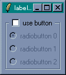 disabled 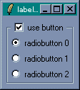 normalこのように、ラベルフレームを用いることで使いやすい GUI を構築することができます。
-labelwidget の使用方法は、今井さんのページ もっとTcl/Tk の Tcl/Tk 入門 ラベルフレーム を参考にさせていただきました。今井さんに深く感謝いたします。
ペインドウィンドウ (panedwindow) は、一つのウィンドウを複数の領域に分割する場合に便利なウィジェットです。分割した領域を pane (ペイン) [*1] といい、ペインとペインの間には sash (サッシュ、サッシ) と呼ばれる線が入ります。この線をマウスでドラッグすることで、ペインの大きさを変更することができます。ペインドウィンドウは、ペイン・ウィンドウとかペイン式（型）ウィンドウと呼ばれる場合もあります。
ペインドウィンドウは、いろいろなアプリケーションでよく使われている形式です。たとえば Windows のエクスプローラーは、左側のペインにディレクトリ、右側のペインにファイル名が表示される 2 ペイン形式のウィンドウです。フレームを利用できるブラウザを使えば、ウィンドウを複数の領域に分割して異なる Web ページを表示することができます。また、エディタ xyzzy や Emacs もウィンドウを分割することができます。
このように、一つの画面を複数の領域に分割して内容を表示する方式を「タイリング」[*2] といいます。これに対し、Windows では複数のウィンドウを重ねて表示することができます。この方式を「オーバーラッピング」といいます。ペインドウィンドウはアプリケーションの画面で「タイリング」を実現するウィジェットと考えることができます。
ペインドウインドウはコマンド panedwindow で生成します。
panedwindow ウィジェット名 オプション
主なオプションを示します。
-orient のデフォルト値は horizontal です。ウィンドウは左右に分割され、サッシは縦線になります。vertical を指定するとウィンドウは上下に分割され、サッシは横線になります。サッシの幅は -sashwidth で指定します。サッシの形状は -relief で指定し、デフォルトは ridge になります。-showhandle を真に設定すると、サッシに四角形のハンドルを付けることができます。ハンドルの大きさは -handlesize で指定します。
ペインにウィジェットを配置するには、ウィジェットコマンド add を使います。
ウィジェット名 add ウィジェット ...
ペインドウィンドウは複数のウィジェットを配置することができます。n 個のウィジェットを配置すると、ウィンドウは n 分割されます。-orient が horizontal の場合、ウィジェットは左側から順番に配置され、vertical の場合は上から順番に配置されます。
それでは簡単な例を示しましょう。次のリストを見てください。
リスト : ペインドウィンドウ (1) panedwindow .pw -sashwidth 4 pack .pw -expand 1 -fill both label .pw.l1 -text "panedwindow\ntest1" -bg white label .pw.l2 -text "panedwindow\ntest2" -bg yellow .pw add .pw.l1 .pw.l2
最初に panedwindow でペインドウィンドウ .pw を作ります。pack で .pw を配置するとき、オプション -expand 1, -fill both を指定すると、ウィンドウのリサイズに対応することができます。次に、.pw に配置するラベルを作ります。ラベルは .pw の子ウィジェットになるので、ウィジェット名は .pw.l1 と .pw.l2 にします。最後に、ウィジェットコマンド add でラベルをペインドウィンドウに配置します。
それでは実行結果を示します。
(1) 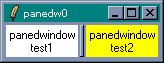 (2) 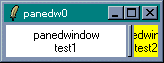 (3) 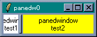
(1) が実行した直後の状態です。(2) がサッシを右へ移動した状態で、(3) がサッシを左へ移動した状態です。
ウィンドウを縦方向に分割する場合は -orient に vertical を指定します。次のリストを見てください。
リスト : ペインドウィンドウ (2) panedwindow .pw -orient vertical -showhandle 1 pack .pw -expand 1 -fill both label .pw.l1 -text "panedwindow\ntest1" -bg white label .pw.l2 -text "panedwindow\ntest2" -bg yellow label .pw.l3 -text "panedwindow\ntest3" -bg cyan .pw add .pw.l1 .pw.l2 .pw.l3
-showhandle に 1 を指定しているので、サッシに四角いハンドルがつきます。あとはラベルを 3 つ作って、ウィジェットコマンド add でペインドウィンドウに配置するだけです。実行結果は次のようになります。
(1) 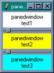 (2) 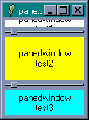 (3) 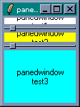
(1) が実行した直後の状態です。(2) は上のサッシュを上に移動した状態で、(3) は下のサッシュを上に移動した状態です。
ペインに配置できるウィジェットは一つだけです。複数のウィジェットを配置する場合は、フレームウィジェットにまとめてからペインウィンドウに配置します。簡単な例題として、複数のチェックボタンを使って、ラベルの表示をオン・オフするプログラムを作ってみましょう。次のリストを見てください。
リスト : ペインドウィンドウ (1)
# ラベル表示の切り替え
proc change_label {i} {
global v
if {$v($i)} {
.pw add .pw.l$i
} else {
.pw forget .pw.l$i
}
}
# ペインドウィンドウ
panedwindow .pw -orient vertical
frame .pw.f
# チェックボタン
foreach i {0 1 2 3} {
set v($i) 1
checkbutton .cb$i -text "display label $i" -variable v($i) -command "change_label $i"
pack .cb$i -in .pw.f
}
# ラベル
label .pw.l0 -text "panedwindow\ntest0" -bg white
label .pw.l1 -text "panedwindow\ntest1" -bg yellow
label .pw.l2 -text "panedwindow\ntest2" -bg cyan
label .pw.l3 -text "panedwindow\ntest3" -bg pink
pack .pw -expand 1 -fill both
.pw add .pw.f .pw.l0 .pw.l1 .pw.l2 .pw.l3
簡単な例題ということで、チェックボタンはフレームに入れてペインウィンドウに配置します。フレームはペインウィンドウの子ウィジェットになるので .pw.f とします。あとは pack の -in オプションを使ってフレーム .pw.f にチェックボタンを配置します。チェックボタンの状態は配列 v に格納します。配列 v は 1 に初期化しているので、最初はすべてオンの状態です。
プロシージャ change_label はチェックボタンの状態を調べて、オンのときはペインドウィンドウにラベルを配置し、オフのときはペインドウィンドウからラベルを削除します。ウィジェットコマンド forget を使うとペインウィンドウからウィジェットを削除することができます。削除したウィジェットはウィジェットコマンド add で再度ペインウィンドウに配置することができます。最後に、ラベルを 4 つ作成して、フレームとラベルをペインウィンドウに配置します。
実行結果は次のようになります。
(1) 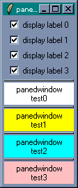 (2) 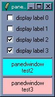 (3) 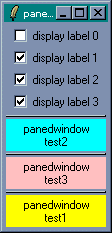
(1) が実行した直後の状態です。(2) はラベル 0 と 1 を削除した状態です。(3) は (2) の後にラベル 1 を表示した状態です。ウィジェットコマンド add はウィジェットを上から順番に追加していくだけなので、削除したラベル 1 を add で再度配置すると一番下に表示されます。
ところで、ペインドウィンドウの中にペインドウィンドウを配置することもできます。次のリストを見てください。
リスト : ペインドウィンドウ (4) # ペインドウィンドウ 1 panedwindow .pw1 pack .pw1 -expand 1 -fill both # ラベル 1 label .pw1.l1 -text "panedwindow\ntest1" -bg yellow # ペインドウィンドウ 2 set pw2 [panedwindow .pw1.pw2 -orient vertical] # ラベル 2, 3 label $pw2.l2 -text "panedwindow\ntest2" -bg cyan label $pw2.l3 -text "panedwindow\ntest3" -bg pink # ウィジェットの配置 $pw2 add $pw2.l2 $pw2.l3 .pw1 add .pw1.l1 $pw2
最初にペインドウィンドウ 1 を作ります。左側のペインにはラベル 1 を配置し、右側のペインにはペインドウィンドウ 2 を配置します。ここで、ペインドウィンドウ 2 の -orient を vertical に設定すると、アプリケーションでよく見かける 3 ペイン型のウィンドウになります。
ペインウィンドウ 2 に配置するラベルは .pw1.pw2.l2 と .pw1.pw2.l3 になります。ウィジェット名が長くなるので、変数 $pw2 に .pw1.pw2 をセットしておきます。実行結果は次のようになります。
(1) 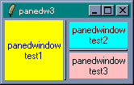 (2) 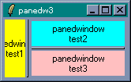 (3) 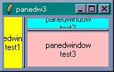
(1) が実行した直後の状態です。(2) は縦線のサッシを左へ移動した状態です。ペインドウィンドウ 2 の領域が大きくなっていますね。このあと、横線のサッシを上に移動した状態が (3) です。このように、ペインドウィンドウを入れ子にすることで、アプリケーションでよく用いられる 3 ペイン型のウィンドウを簡単に作成することができます。
スピンボックス (spinbox) はエントリー (entry) ウィジェットを拡張したウィジェットです。スピンボックスはエントリーの右側に上下のボタンが付いていて、エントリーで値を直接入力するだけではなく、上下のボタンを押すことで値を選択することができます。
スピンボックスはコマンド spinbox で生成します。
spinbox ウィジェット名 オプション
主なオプションを示します。
数値はオプション -from n -to m -increment i で簡単に設定することができます。数値が浮動小数点数の場合、オプション -format で表示方法を設定することができます。数値以外の場合はオプション -value を使います。項目をリストに格納して -value にセットします。-state を readonly にすると、エントリーによる入力が禁止され、ボタンだけで値を選択することになります。
それでは簡単な使用例を示しましょう。次のリストを見てください。
リスト : スピンボックス
spinbox .s1 -from 1 -to 10 -increment 1 -width 10
spinbox .s2 -from 1 -to 5 -increment 0.5 -width 10 -format %05.2f
spinbox .s3 -value {apple banana cherry grape orange} -width 10 -state readonly
pack .s1 .s2 .s3 -padx 5 -pady 5
スピンボックスを 3 つ作ります。.s1 は 1 から 10 までの数値で、-increment は 1 です。.s2 は 1 から 5 までの数値ですが、-increment は 0.5 なので浮動小数点数で表示されます。-format の指定が %05.2f なので、表示は 01.50 のようになります。.s3 は apple, banana, cherry, grape, orange から選択します。-state に readonly を指定したので、エントリーから入力することはできません。
それでは実行結果を示します。
(1) 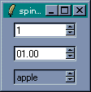 (2) 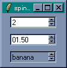 (3) 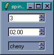
(1) は実行した直後の状態です。(2) はアップボタンを 1 回押した状態です。もう一回アップボタンを押すと (3) の状態になります。
エントリーウィジェットには validation という入力データを確認する機能があります。スピンボックスでも validation を使うことができます。validation の設定はオプション -validate と -validatecommand (-vcmd) で行います。オプション -validate は入力データを確認するタイミングを指定します。タイミングの種類を次に示します。
| none | validation を行わない（デフォルト） |
| focus | 入力フォーカスを得たとき、または失ったとき |
| focusin | 入力フォーカスを得たとき |
| focusout | 入力フォーカスを失ったとき |
| key | キーが入力されたとき |
| all | 上記の条件を満たしたとき |
-validate で指定した条件を満たしたとき、-vcmd で指定したコマンドを実行して入力データを確認します。-vcmd には真または偽を返すコマンドを指定してください。コマンドが真を返した場合、エントリーの内容は更新されます。コマンドが偽を返した場合、エントリーの内容は変更されません。このとき、オプション -invalidcommand にコマンドが設定されていれば、そのコマンドが実行されます。
-vcmd と -invalidcommand で指定したコマンド内では、ウィジェット内の情報を取得するための方法が用意されています。% から始まる文字列はウィジェット内の情報に置換されます。チェックするデータは %P で取得することができます。その他の情報は Tcl/Tk のヘルプを参照してください。
それでは簡単な使用例を示しましょう。次のリストを見てください。
リスト : 入力データの確認
spinbox .s1 -from 1 -to 10 -increment 1 -width 10 \
-validate key -vcmd {string is integer %P}
spinbox .s2 -value {apple banana cherry grape orange} -width 10 \
-validate key -vcmd {expr {[string length %P] <= 8}}
pack .s1 .s2 -padx 5 -pady 5
スピンボックス .s1 のように数値を入力する場合、データが数値であることを確認しておくと便利です。データのチェックは Tcl のコマンド string を使うと簡単です。string is class data は、引数 data が文字クラス class で構成されているかチェックします。文字クラスとは文字の種類のことです。数値を判定する場合は intger を指定します。
-validate には key を指定します。これはエントリーからのキー入力にも対応しています。キー入力があるたびに string is integer でデータをチェックするので、数字を表す文字以外は入力することができません。
スピンボックス .s2 はデータの長さを string length でチェックしています。これで 8 文字よりも長いデータを入力することはできません。string にはいろいろな機能があるので、詳細は Tcl/Tk のマニュアルを参照してください。